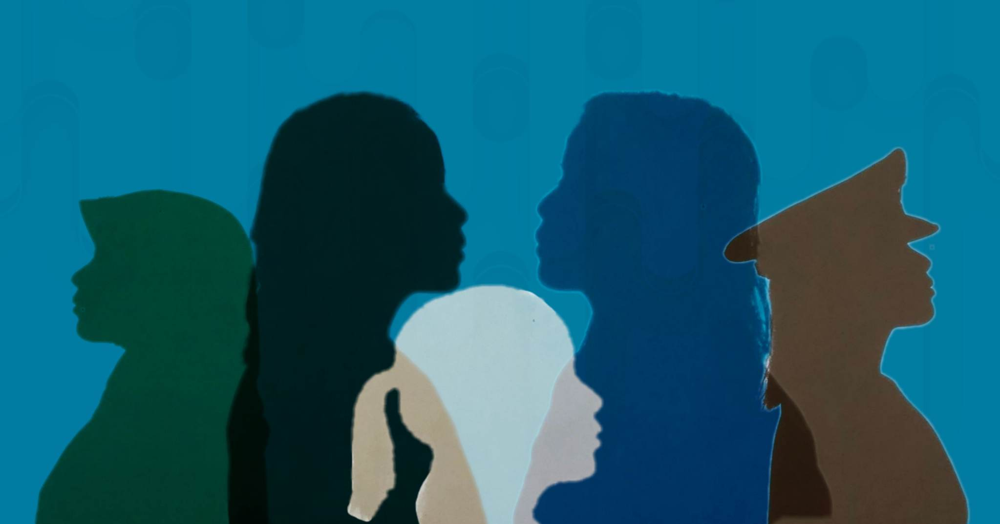
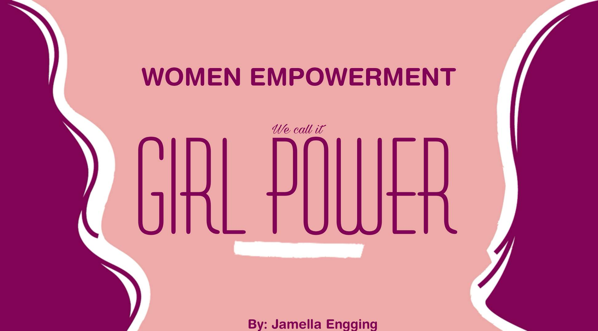

Women empowerment is a collective effort that requires the involvement of governments, civil society organizations, communities, and individuals to create an enabling environment where women can fully exercise their rights and contribute to society's progress. Women empowerment is crucial not only for achieving gender equality but also for the overall development and progress of societies. It recognizes the inherent value and potential of women and seeks to create a world where women can fully realize their rights, fulfill their aspirations, and actively contribute to building a more equitable and just society.
I have always heard the saying that "women are incapable of leading on all fronts at the same time will be calling the sun incapable to shine". But for a change, we should think about how we can support these women with their duties. Women make up half of the world's population, and they deserve to have the same opportunities as men. Women's empowerment can lead to a number of benefits, including increased economic productivity, improved health and well-being, and reduced poverty.
There are many ways that we can do to educate our fellows. Instead of going out and trying to advocate women's empowerment to the public, it's just wasting your time and voice, so what about using technology and making a webpage about my advocacy. I use technology to create a website about my campaign to talk abou women's empowerment. Through this, I can show it to the audience, and it will make my advocacy spread more and encourage people.
Here is a video of me educating myself about this advocacy. Even though I have limited knowledge about women's empowerment but, I am interested in learning more about this topic because it remains so memorable.
© 2023 BY Group V | EINSTEIN